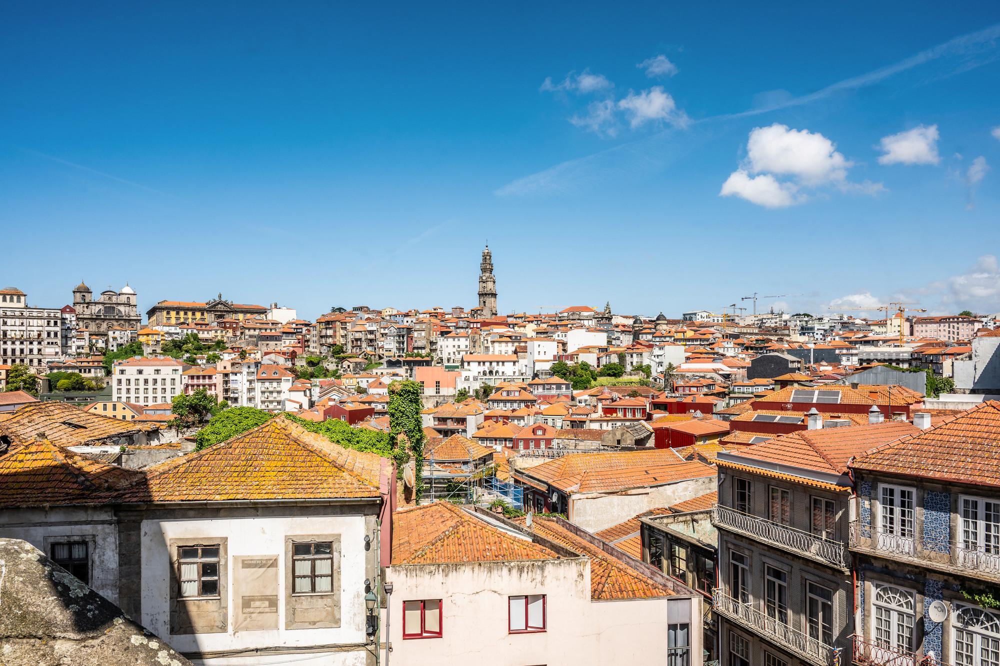
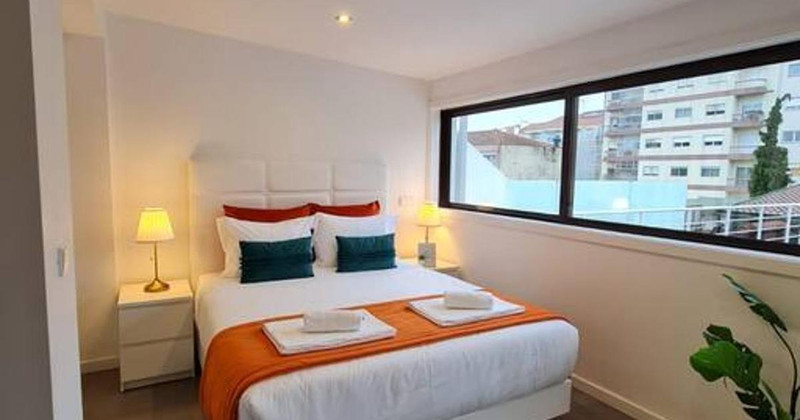
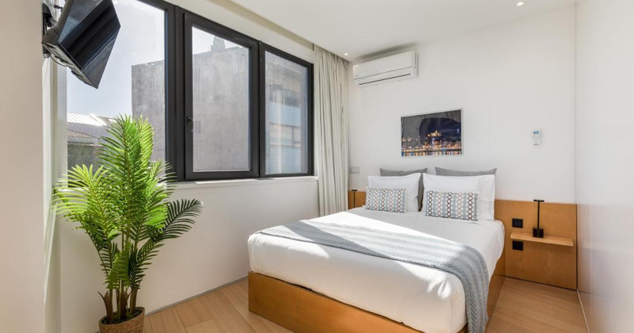
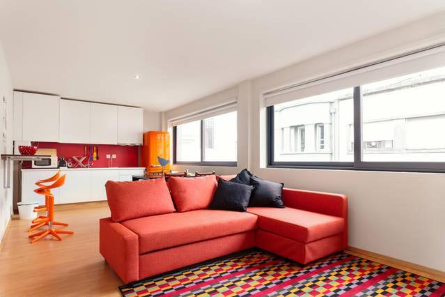

Alojamento local · Porto
Apartments2Stay
Apartamentos inteiros no centro histórico do Porto, do Largo de São Domingos e da Rua das Flores à Ribeira.
Apartamentos
No centro histórico do Porto, do Largo de São Domingos à Ribeira.
7 apartamentos
no centro do Porto
-

Flores
Estúdio 35 m² ou Superior 46 m² · até 2 pessoas
Dois tipos de apartamento num prédio antigo do Largo de São Domingos, com varanda sobre o largo.
Ver o apartamento -

Casas do Pátio
12 tipologias · 22 a 80 m² · Ribeira
Estúdios e apartamentos na Ribeira, a menos de 300 m do rio.
Ver o apartamento -

Discovery
Estúdio · 35 m² · até 2 pessoas
Um estúdio amplo no 3.º andar, com janela para um pátio de azulejos.
Ver o apartamento
Em construção
As páginas destes estão a ser preparadas. Até lá, reservam-se no Booking.
-

Em construçãoINSOLI I Porto
Rua de Nossa Senhora de Fátima · Cedofeita
Ver no Booking -

Em construçãoAlvaro's Loft Downtown
Rua da Alegria
Ver no Booking -

Em construçãoPicaria Apartment
Rua da Picaria
Ver no Booking -
Em construção Vitorino Damásio 139
Rua de Vitorino Damásio
Página em preparação

Em todos
Casas inteiras,no centro histórico.
Cada apartamento é só de quem o reserva, com cozinha e casa de banho próprias, em prédios antigos do centro do Porto.
Apartamentos inteiros
Com cozinha e casa de banho privativas.
Wi-Fi gratuito
Nos três apartamentos com página.
Tudo a pé
Da Rua das Flores e da Ribeira, a Sé, São Bento e o rio ficam a 500 m ou menos.
Check-in a partir das 16:00
E check-out até às 11:00.
Onde ficam
Localização
Os sete apartamentos no centro do Porto, e quanto se anda de cada um até à Estação de São Bento.
ApartamentoA pé até São Bento
- FloresLargo de São Domingos · Rua das Flores7 min
- Casas do PátioRibeira11 min
- DiscoveryLargo de São Domingos · Rua das Flores7 min
- INSOLI I PortoRua de Nossa Senhora de Fátima · Cedofeitaem construção30 min
- Alvaro's Loft DowntownRua da Alegriaem construção14 min
- Picaria ApartmentRua da Picariaem construção9 min
- Vitorino Damásio 139Rua de Vitorino Damásioem construção—
Caminhos a pé pelo OpenStreetMap. As setas na orla do mapa contam a partir do Largo de São Domingos.
Antes de reservar
Antesde reservar.
Regras comuns aos três apartamentos com página, do anúncio de cada um no Booking (novembro de 2026); confirme as da casa que escolher.
- Check-in
- a partir das 16:00
- Check-out
- até às 11:00
- Hora de chegada
- avisar com antecedência
- Fumar
- não
- Festas
- não
- Animais
- não são admitidos